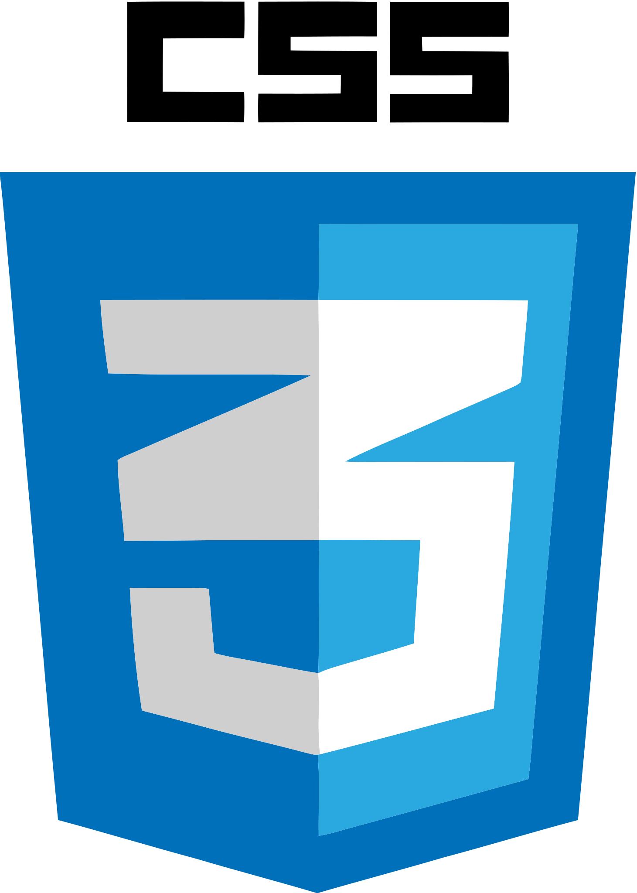
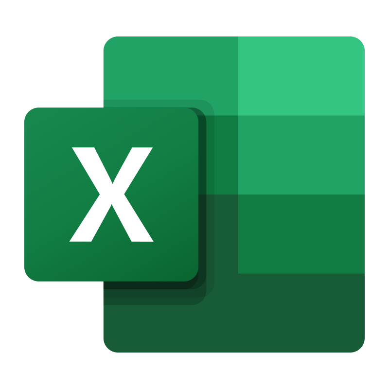

Desarrollador web fullstack y analista de datos, con estudios
superiores en marketing digital, desarrollo de software y
administración de empresas. Puedo desarrollar tanto aplicaciones
del backend como del frontend, usando tanto bases de datos SQL como no SQL.
Del mismo modo, sé realizar la implementación etiquetas y plugins en sitios web para la posterior obtención, transformación, análisis y visualización de datos.
Me gusta interactuar con personas y ayudarlas, por eso el
enfoque que manejo es el del cliente interno y externo, es
decir, independientemente del cargo, mi trabajo debe ser ayudar
o aportar a alguien; y esas interacciones me gusta tenerlas en
un marco de respeto y de cercanía.
Finalmente y más importante, soy una persona de familia, me
gustan las mascotas y mi propósito de vida es ser feliz y ayudar
a que los demás también lo sean. Teniendo en mente que tanto yo
como los demás tenemos sólo una vida, considero que es deber de
cada persona mejorar su vida y ayudar a los demás a que también
lo hagan.
JavaScript
Java
Python
React
HTML
Bootstrap
CSS
Springboot
TypeORM
PostgreSQL
MongoDB
MySQL
R_Rstudio
SQL
NodeJS
Express
Axios
Mongoose
Git
Github
Jira
Trello
Notion
Slack
JWT
Bcrypt
Auth0
Docker
Azure
AWS
Jenkins
Vue
Excel
Sheets
Google Ads
Tag_Manager
Ubersuggest
Power BI
Tableau
Analytics
Proyecto realizado con REACT, AUTH0, HTML, NodeJS, CSS, Bootstrap, Axios, dotenv, sweetalert2 y Java Script.
Los tópicos relevantes son principalmente la autenticación, Single Page Application (SPA) y consumo de API's.
Enlace al repositorio en github.

NOTA: Si quieres ver el gif en pantalla completa, puedes dar clic derecho sobre el mismo y elegir la opción "Abrir imagen en una pestaña nueva".
Proyecto realizado con Express, Java Script, MongoDB, Mongoose, NodeJS y Postman.
Los tópicos relevantes fueron BD no SQL, creación de API's y estructura de modelo, controlador y rutas.
Enlace al repositorio en github.

NOTA: Si quieres ver el gif en pantalla completa, puedes dar clic derecho sobre el mismo y elegir la opción "Abrir imagen en una pestaña nueva".
Proyecto realizado con HTML y CSS
Los tópicos relevantes son principalmente el manejo de estilos con CSS, distintos tipos de selectores y menus desplegables, uso de imágenes y so de íconos.
Enlace al repositorio en github.

NOTA: Si quieres ver el gif en pantalla completa, puedes dar clic derecho sobre el mismo y elegir la opción "Abrir imagen en una pestaña nueva".
Proyecto realizado con HTML, CSS y Java Script.
Los tópicos relevantes son principalmente el manejo del DOM, uso de javascript, consumo de API's, promesas, estilos e implementación de un buscador.
Enlace al repositorio en github.
NOTA: Si quieres ver el gif en pantalla completa, puedes dar clic derecho sobre el mismo y elegir la opción "Abrir imagen en una pestaña nueva".
Proyecto realizado con PostgreSQL TYPESCRIPT, TypeORM y Express. Se usa Typeorm por usar un sistema de anotaciones (@) semejante al de Springboot.
Los tópicos relevantes son principalmente Bases de datos relacionales, SQL, creación de API's y Programación Orientada a Objetos (POO).
Enlace al repositorio en github.
NOTA: Si quieres ver el gif en pantalla completa, puedes dar clic derecho sobre el mismo y elegir la opción "Abrir imagen en una pestaña nueva".
Proyecto realizado con REACT, NodeJS, JavaScript, Express, Axios, Bootstrap, HTML, CSS, MongoDB y Mongoose.
Los tópicos relevantes fueron BD no SQL, creación de API's y estructura de modelo, controlador y rutas. Consumo de API's, Manejo de estilos y creación de interface de usuario.
Enlace al repositorio en github.
NOTA: Si quieres ver el gif en pantalla completa, puedes dar clic derecho sobre el mismo y elegir la opción "Abrir imagen en una pestaña nueva".